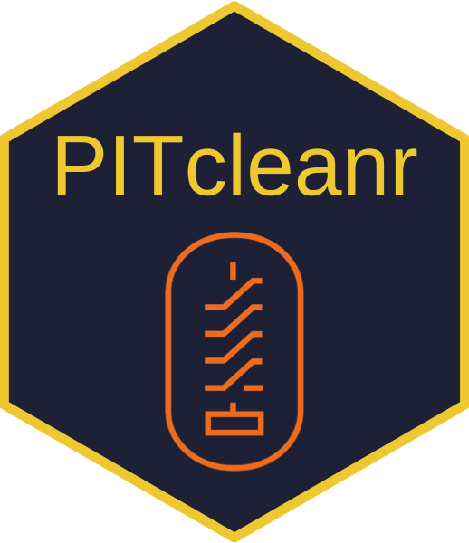

PITcleanr 
Description
PITcleanr is an R package for preparing PIT tag data for further analysis. The package can help import complete tag histories from PTAGIS, build a configuration file to help assign each detection to a “node”, and compress those detections into a smaller file. It contains functions to determine which detection locations are upstream or downstream of each other, build a parent-child relationship table describing whether detection locations are upstream or downstream in relation to each other, and assign directionality of movement between each detection location. For analyses that focus on one-way directional movement (e.g., straightforward CJS models), PITcleanr can help determine which detections fail to meet that one-way movement assumption and should be examined more closely, and which detections can be kept.
It was originally conceived as a companion to the DABOM package for estimating abundance of returning anadromous adult fish moving upstream. PITcleanr was designed to prepare the raw PIT tag observations from PTAGIS for use in the DABOM package.
The user can find more information related to installation and use of this package on the package website.
Installation Instructions
The PITcleanr compendium can be downloaded as a zip from from this URL: https://github.com/KevinSee/PITcleanr/archive/master.zip
Or you can install the compendium as an R package from GitHub by using Hadley Wickham’s devtools package:
# install and load remotes, if necessary
install.packages("devtools")
devtools::install_github("KevinSee/PITcleanr",
build_vignettes = TRUE)devtools may require the downloading and installation of Rtools. The latest version of Rtools can be found here.
For the latest development version:
devtools::install_github("KevinSee/PITcleanr@develop")Be sure to use the build_vignettes = TRUE argument, as this will build all of the vignettes (i.e., user manuals) that are included with the package. Further instructions on how to use PITcleanr can be found in the vignettes, which can be accessed using:
browseVignettes(package = "PITcleanr")
#> No vignettes found by browseVignettes(package = "PITcleanr")Compressing PTAGIS Detection Data
The complete tag history query output from PTAGIS (e.g., ptagis_file) will provide a record for every detection of each tag code in the tag list. Again, this may include multiple detections on the same antenna, or the same site within a short period of time, leading to an unwieldy and perhaps messy dataset. One of the main purposes of PITcleanr is to compress that data into an initial summary using the function compress(). At a minimum, this function requires a path e.g., ptagis_file, to the complete tag history query results downloaded from PTAGIS.
In our example, we perform the compress() function on the ptagis_file object containing the file path to our query results, and write the output to an object comp_obs containing the compressed observations.
# view path to example file, of course you can also set ptagis_file to your own PTAGIS query results
ptagis_file
#> [1] "/Users/seek/Library/R/4.0/library/PITcleanr/extdata/TUM_Chinook_2015.csv"
# run compress() function on it
comp_obs = compress(ptagis_file)
# look at first parts of resulting object
head(comp_obs)
#> # A tibble: 6 x 9
#> tag_code node slot event_type_name n_dets min_det
#> <chr> <chr> <int> <chr> <int> <dttm>
#> 1 384.3B239AD241 NASONC 1 Mark 1 2013-11-04 16:45:00
#> 2 384.3B239AD241 JDJ 2 Observation 12 2014-05-25 11:14:29
#> 3 384.3B239AD241 BO4 3 Observation 11 2015-05-14 16:41:24
#> 4 384.3B239AD241 TD1 4 Observation 3 2015-05-16 11:15:40
#> 5 384.3B239AD241 MC2 5 Observation 17 2015-05-19 17:01:15
#> 6 384.3B239AD241 PRA 6 Observation 2 2015-05-24 13:51:16
#> # … with 3 more variables: max_det <dttm>, duration <drtn>, travel_time <drtn>The output consists of a tibble containing columns for:
- tag_code: The unique PIT tag ID.
- node: By default, each site code from PTAGIS is considered a node. More on this below…
- slot: A detection “slot” for each tag, numbered in chronological order. Also more on this below…
- event_type_name: The type of “event”. Typically, mark, observation, recapture, or recovery.
- n_dets: The number of detections that occurred within that slot.
- min_det: The time of the first (min) detection in the slot.
- max_det: The time of the last (max) detection in the slot.
- duration: The duration of that slot (maximum - minimum detection time).
- travel_time: The travel time between the previous slot and that one.
A note on “nodes”: A node is the spatial scale of interest for the user. By default, the compress() function considers a site code from PTAGIS as a node. However, a node could be defined as the individual PIT antenna a detection was made on, or the array that antenna is a part of, or groups of arrays, or sites, or groups of sites, or possibly even larger (e.g, any detection in this tributary!) depending on the spatial scale desired. The user may decide to define some arrays at particular sites to be their own nodes, while simultaneously lumping all the sites in a particular watershed into a single node. To utilize this kind of grouping, a configuration file or table must be supplied to the configuration argument in the compress() function. This configuration file helps map what node each antenna or MRR site corresponds to. By default, compress assigns each site code to its own node.
Each slot in the output is defined as all detections on a particular node before the tag is detected on a different node. The user can define a maximum number of minutes between detections before a new slot should be defined by supplying a value to the max_minutes argument to compress(). The units of the duration and travel_time columns can also be defined by the units argument. The default is minutes (mins). As an example, if a tag moves from node A to B and back to A, there will be three slots in the compressed data.
The help menu for compress(), or any function for that matter, can be accessed using:
?PITcleanr::compress